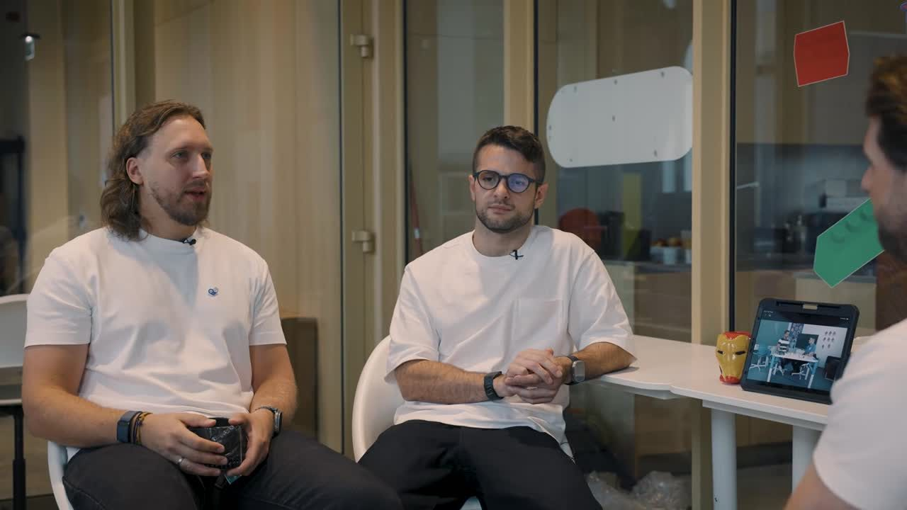

Kris Vas · laiškas tėvams · #05 · 2026-10
Kas pirmas tavo rankose ryte: vaikas ar telefonas?
Viskas, kas netilpo į laišką. Pradėk nuo 10 taisyklių. Likusi dalis palauks.
📋 10 taisyklių🎧 Klausyk🎬 Video🧪 Kas veikia📚 Knygos ir filmai🗓️ Savaitgalis🧰 Įrankiai📎 Šaltiniai

Proto Industrija · Vilnius · nufilmuota 2026-08-19
📋 Tavo šeimos telefono etiketas
Pažymėk taisykles, kurias jūsų šeima pasirenka. Įrašyk savo Nr. 1. Spausk „Atsispausdinti", ir turėsi A4 lapą šaldytuvui. Pasirašo visi, ir tėvai.
Spausdinant telefone rinkis „Išsaugoti kaip PDF". Tavo pasirinkimai lieka tik tavo naršyklėje, mums jie nesiunčiami. Taisyklės sudarytos remiantis Amerikos pediatrų akademijos šeimos medijų plano patarimais⁵; nė viena nėra „moksliškai įrodyta" atskirai.
Mano Nr. 1: telefonas pilkas. Įjungiu juodai baltą ekraną, ir jo nebesinori pakelti taip dažnai. Apie tai kalbėjom ir laidoje 20:20 → Kaip įjungti, parodžiau per 34 s: „Vienas paprastas triukas telefonui".
O tavo? Atrašyk vienu sakiniu. Gražiausią, su tavo leidimu, įdėsiu į kitą laišką.
🎧 Klausyk (≈3 min)
Skaito mano balso klonas, ne aš pats. Tinka vairuojant ar ruošiant vakarienę.
Tekstas (ką girdi)
🎬 81 sekundė: ką pasiūlyti vietoj ekrano
Iš Proto Industrijos pokalbio su Džiugu Luku Eidukumi (kalbam abu). Klausimas paprastas: kaip vaiką ištraukti iš ekrano? Atsakymas: iššūkis, įdomesnis už ekraną.
Dar keturi momentai tėvams (visas pokalbis 1 h 37 min, žiūrėk tik tai, kas tau įdomu):
- 18:48 · Jei sakai „nesėdėk telefone", o pats skrolini, vaikas to nepadarys. Pavyzdys stipresnis už taisyklę.
- 20:20 · Pilkas ekranas. Mažiau spalvų, mažiau noro pakelti telefoną. Veikia ir suaugusiems.
- 54:18 · Būrelis yra apie draugystę. Surasti savo geriausią draugą ir daryti kietus dalykus.
- 1:35:10 · „Išeik iš skaitmeninio pasaulio, ateik į realų, pabūk tarp tikrų žmonių."
Video priklauso Proto Industrijai, rodomas per YouTube. Ačiū Erikui už pokalbį.
🧪 Kas iš tikro veikia? Sąžiningai
Laiške paklausiau: sportas, draudimas, būreliai ar pavyzdys? Štai ką rodo tyrimai. Raidė = kiek tvirti įrodymai (A tvirti · B vidutiniai · C silpni).
→ Būti pavyzdžiu namieB−
Tėvų telefonas, pertraukiantis pokalbį su vaiku, susijęs su daugiau vaiko elgesio sunkumų³. Ryšys, ne įrodyta priežastis. Pediatrai pataria planą kurti visiems šeimos nariams, ir sau⁵.
→ Uždrausti telefonusC
Britų tyrime vien mokyklos draudimas nebuvo susijęs su geresne vaikų savijauta. Labiau siejosi tai, kiek telefono vaikas naudoja apskritai⁴. Namų susitarimai, galiojantys visiems, atrodo protingesni.
→ Daugiau sportoC
Judėjimas naudingas savaime. Kad jis „gydo" ekranų įprotį, tvirtų įrodymų neradau.
→ Daugiau būreliųC
Tiesioginio tyrimo, kad būrelis sumažina žalą, neradau. Bet logika paprasta: laikas, praleistas statant, žaidžiant ir su draugais, nėra laikas ekrane. Sakau atvirai: aš čia šališkas, nes kuriu būrelius.
Mano išvada: nė vienas nėra stebuklas. Pirmi trys veikia tik tada, kai namuose vaikas mato pavyzdį.
📚 Mano lentyna: 3 knygos ir 2 filmai
Asmeninė lentyna, ne redakcija. Vertė = kiek iš to gali parsinešti namo šį vakarą.
→ Jonathan Haidt, „Nerimo karta" (Eugrimas, 2024, lietuviškai). Keturios taisyklės, kurios telpa ant šaldytuvo. Ginčijama knyga: skaityk kaip argumentą, ne kaip galutinę tiesą. Vertė tėvui: 7/10.
→ Jonathan Haidt ir Catherine Price, „The Amazing Generation" (2025, angliškai, vaikams 9–12 m.). Knyga, kurią vaikas skaito pats. Joje yra ir pilko ekrano iššūkis. 8/10.
→ Catherine Price, „How to Break Up with Your Phone" (angliškai). Suaugusiam, žingsnis po žingsnio. Pradėk nuo savęs. 7/10.
→ 🎞️ „WALL·E" (Pixar, 2008, nuo 6 m.). Visa šeima prie vieno ekrano, kartą. Po filmo paklausk: „Kodėl žmonės laive nevaikščiojo?" 8/10.
→ 🎞️ „The Social Dilemma" (Netflix, 2020, paaugliams 13+ kartu su tėvais). Žmonės, kūrę „Like" mygtuką, pasakoja, kam jis skirtas. Kai kurie teiginiai ginčijami. 7/10.
Filmų prieinamumą Lietuvoje patikrink savo platformoje: katalogai keičiasi. Su nė vienu autoriumi, leidykla ar platforma verslo ryšių neturiu ir iš nuorodų neuždirbu.
🗓️ 3 idėjos šiam savaitgaliui (spalio 10–11 d.)
→ Šeštadienis, Kaunas: Neskaitymo festivalis (apie disleksiją). Ąžuolyno biblioteka, Radastų g. 2, 10:30–18:00, nemokamai. Festivalis apie disleksiją ir kitokį skaitymą: filmai, pokalbiai, veiklos vaikams (kai kurioms reikia registracijos). Diskusija su manimi Ąžuolo salėje 14:15. Ateik pasisveikinti. Sąžiningai: festivalyje LEGO dirbtuves vaikams veda Robotikos akademijos komanda, kurios bendraįkūrėjas esu aš.
→ Bet kur: 90 minučių miške, telefonai dėžėje. Kaune, pavyzdžiui, Panemunės šilas. Užduotis vaikui: surasti 5 skirtingus lapus ir 1 daiktą, kurio niekada nematė.
→ Sekmadienio vakaras: šeimos etiketo vakarienė. Telefonai stovėjimo vietoje. Kartu peržiūrit 10 taisyklių viršuje, kiekvienas pasirenka vieną, vaikas užrašo Nr. 1, visi pasirašo. Ant šaldytuvo.
🧰 Kiti mano nemokami įrankiai
→ 7 vakarų planas be ekrano. Septyni vakarai po 20–30 minučių, kiekvienas su šaltiniu. Logiškas kitas žingsnis po etiketo.
→ krisvas.lt. Visi testai, žemėlapiai ir ankstesni laiškai vienoje vietoje.
📎 Šaltiniai
¹ Proto Industrija, Kris Vas ir Džiugas Lukas Eidukas, 2026-09-27, YouTube.
² Pew Research Center, 2024-03-11, „How Teens and Parents Approach Screen Time", JAV, 1 453 poros: 46 % paauglių sako, kad tėvas bent kartais išsiblaško dėl telefono; 47 % tėvų sako, kad patys telefone praleidžia per daug.
³ McDaniel & Radesky, Child Development, 2018, 170 šeimų su mažais vaikais, PubMed. Skerspjūvio tyrimas, priežastis neįrodyta.
⁴ Goodyear ir kt., The Lancet Regional Health Europe, 2025, 1 227 mokiniai, 30 mokyklų, PMC.
⁵ Amerikos pediatrų akademija, „How to Build Healthy Digital Habits".
⚗️ Šį puslapį ir taisykles kūriau su AI padėjėju. Eksperimentinis, gali klysti, nemokamas. Radai klaidą ar turi pastabą? Parašyk, pataisysiu.
Sąžiningai: esu Robotikos akademijos, BrAIn Club ir ExoClass bendraįkūrėjas. Šiame puslapyje jokio konkretaus būrelio nerekomenduoju.
Ačiū Proto Industrijai ir Erikui už pokalbį, Džiugui už pokalbį, žurnalistei Daivai Žeimytei-Bilienei už pokalbį apie tai, kad „patinka" dar nereiškia „gerai", Lietuvos audiosensorinei bibliotekai ir Inesai už kvietimą į festivalį, Titui už kadrus.
Privatumas: anoniminė statistika be slapukų. Microsoft Clarity įsijungia tik paspaudus „Leisti". Privatumo politika ·